Feature documentary, 2023
La Lucha
A group of people with disabilities in Bolivia unite in protest for a pension. They trek the Andes in their wheelchairs. They confront a government that tries to silence them and a society indifferent to their struggle.
- Year
- 2023
- Kind
- Feature documentary
- Length
- 90 minutes
- Director
- Violeta Ayala
- Producers
- Redelia Shaw, Dan Fallshaw
- Production
- United Notions Film
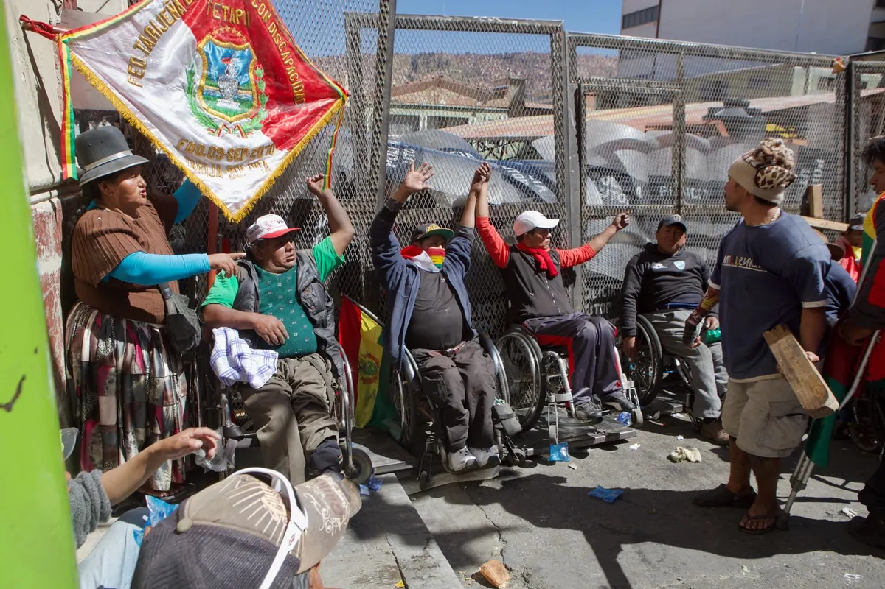
Play the trailerPress
“This is a hell of a tale. It’s a magnificent tale about the fight for what is right. I was moved.”
Steve Kopian, Unseen Films“The heroes featured here show the full swath of how a fight like this can both elevate and break down the human spirit and makes 'The Fight' be a title with two meanings; the fight against the system, and the fight to not give up.”
Juan J. Arroyo, Rolling Stone“An artful witness to a revolution and involve us all.”
Anita Hollander, actress
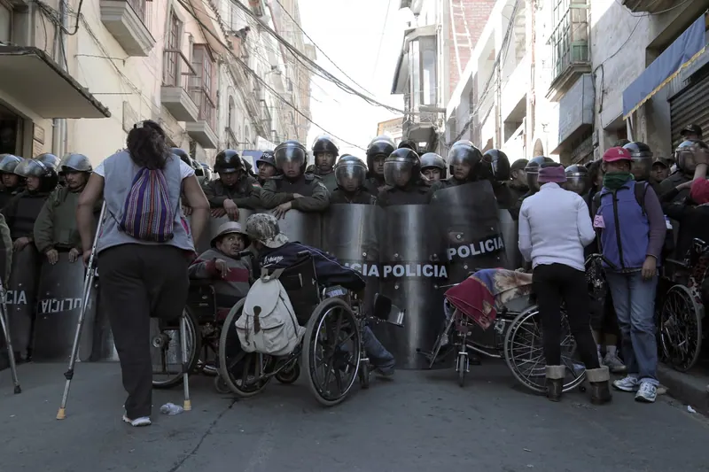
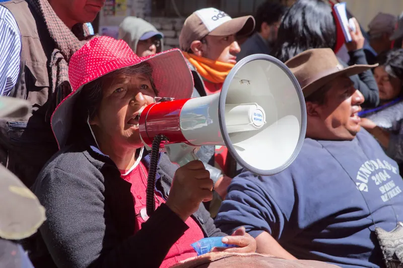
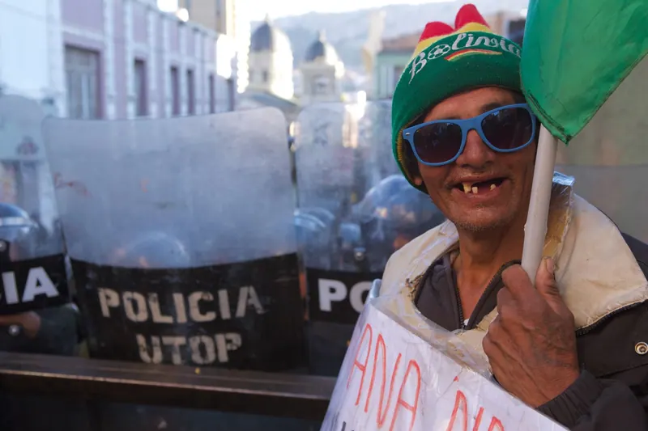

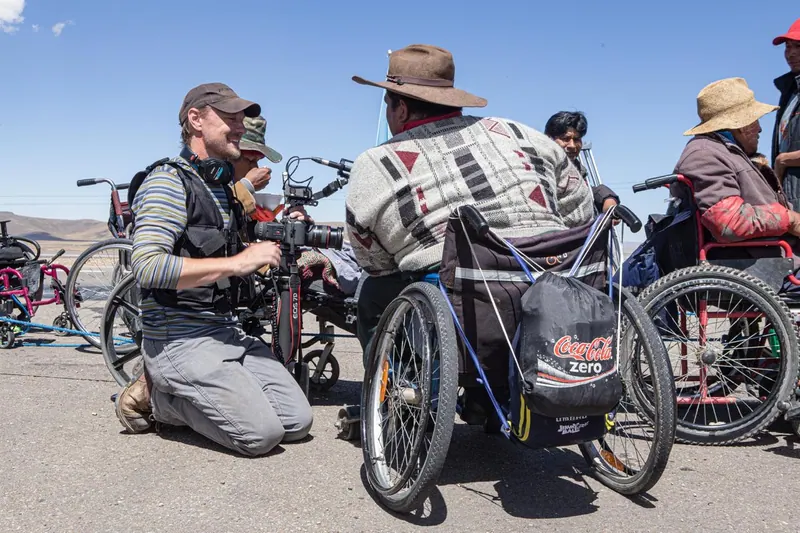

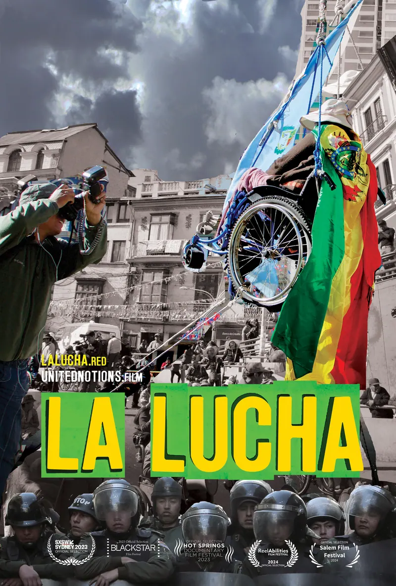
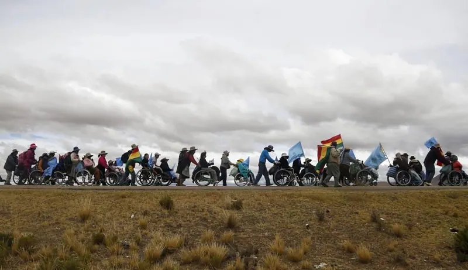
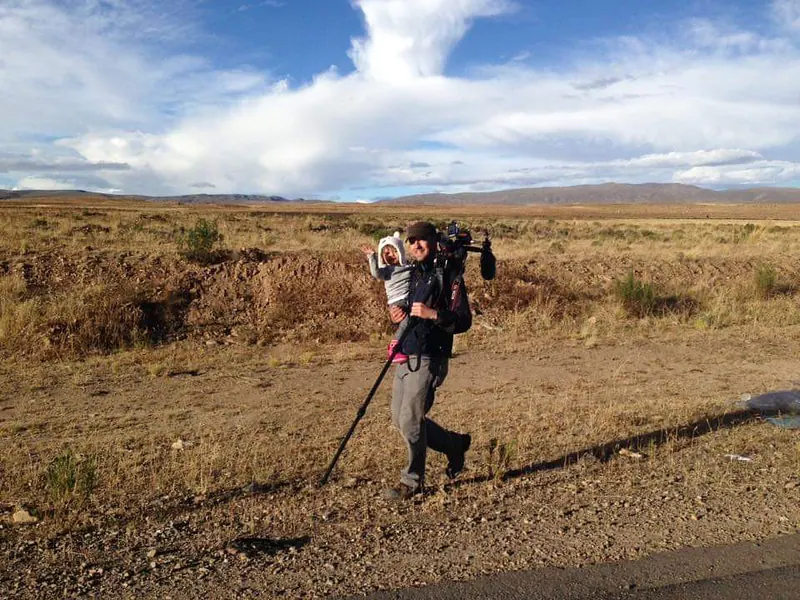
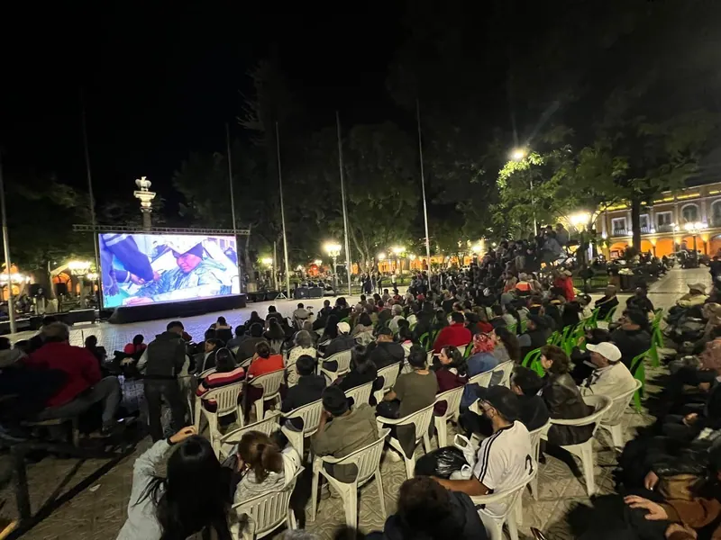
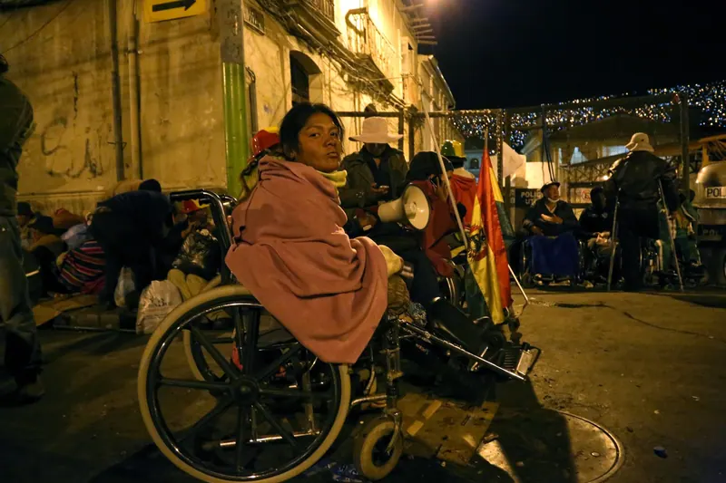
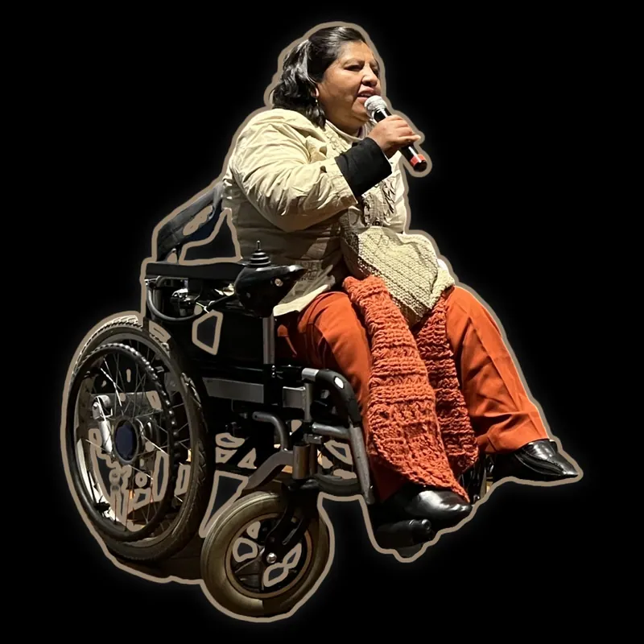
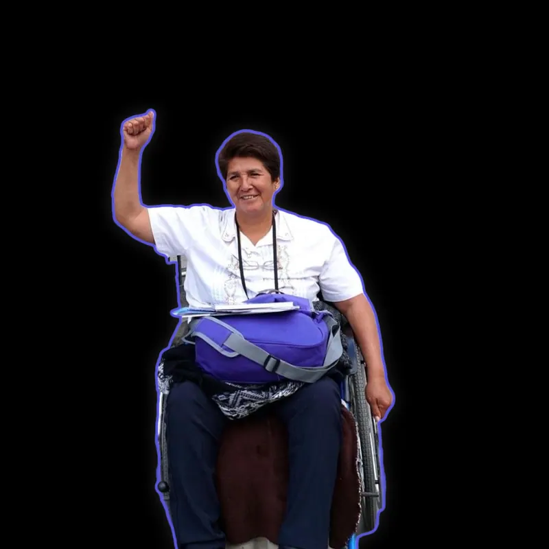

Premieres
World premiere
BlackStar Film Festival, Philadelphia, 2023
Australian premiere
SXSW Sydney, 2023
New York premiere
ReelAbilities Film Festival and the Museum of the Moving Image
Award
NYWIFT Award for Excellence in Directing
Bolivian premiere
The central plazas of Cochabamba, La Paz and Potosí, 2024, with sign language interpretation
Broadcast
PBS, 2024
United Notions Film presents La Lucha directed by Violeta Ayala produced by Redelia Shaw and Dan Fallshaw